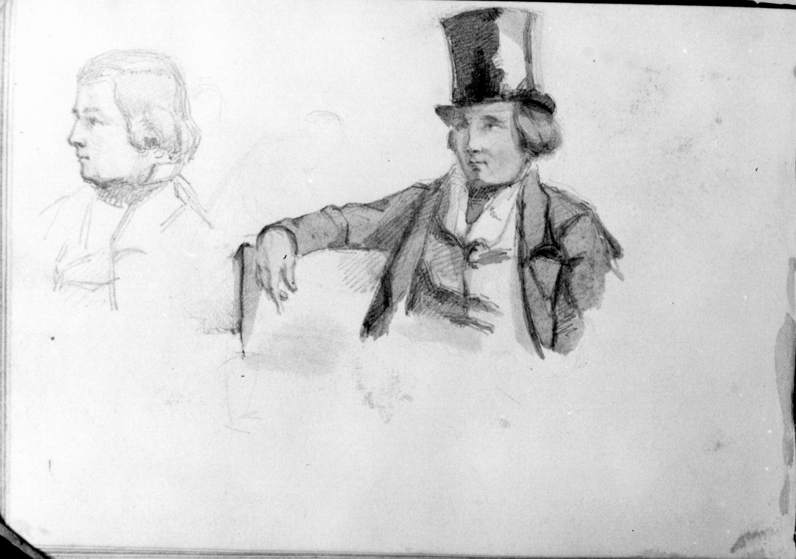

Appendix J
Possible Sketch of John Stevenson Maxwell
I strongly believe that the image on page 52 of James Whistler’s St. Petersburg Sketchbook in MacDonald, Catalogue Raisonné, p. 9, is John Stevenson Maxwell. After Maxwell left Russia permanently in November 1844, he traveled extensively. In Greece, he spent Christmas Day 1844 in the home of Rev. John Henry Hill, who, together with his wife, Frances (Mulligan) Hill, ran a school in Athens for Greek boys and a second one for Greek girls. Reverend Hill asked him whether he was related to his friend of college days, Hugh Maxwell, because his resemblance to the latter was so great (John S. Maxwell to Mrs. Hugh Maxwell, Trieste, Monday, December 16. 1844; entry for Thursday, Dcember 26, N-YHS: Maxwell Papers, no. 49). Comparing the drawing in the Catalogue Raisonné to Image 55 in this volume, a portrait of Hugh Maxwell painted in 1844, I think that he and the man wearing a hat (as well as the profile image beside it) in the Catalogue Raisonné, greatly resemble one another.
James had actually also drawn a pencil portrait of Maxwell, who reminded Major Whistler that he, Maxwell, had it in his possession, and that James would have to make an oil portrait of him some day (John S. Maxwell to George W. Whistler New York. Monday. December 13. 1846 – N-YHS: Maxwell Papers). The whereabouts of this pencil drawing or of an oil portrait of Maxwell are unknown to me.
